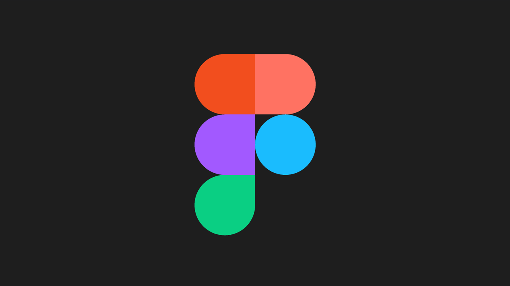
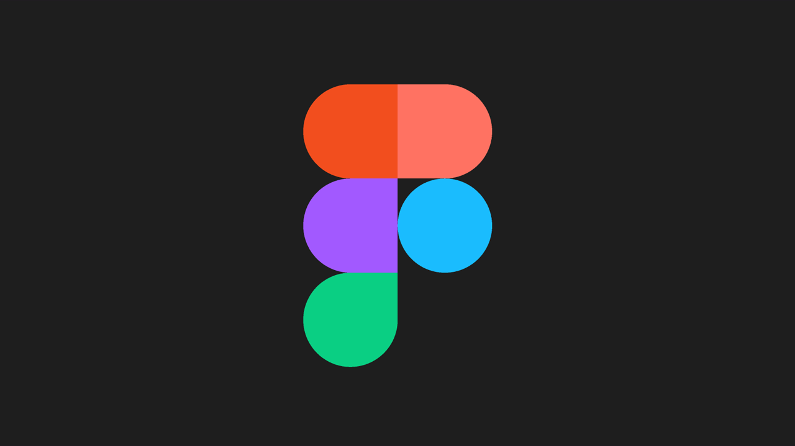

SENAI
Nos primeiros 6 meses desse ano, tive a oportunidade de cursar Técnico em Desenvolvimento de Sistemas, no SENAI, onde aprendi conteúdos de front-end, back-end e entendi conceitos de trabalho em equipe e design onde evolui meus conhecimentos e gestão de tempo, trabalho em grupo, etc que com certeza vão me ajudar muito no futuro. Aprendemos sobre python, html, css, além de arquitetura de redes, arquitetura de hardware, etc. Eu acho o curso relativamente cansativo, afinal estamos sempre trabalhando como todo curso deve ser. Escolhi o curso por considerar essa área como abrangente e crescente nos dias atuais, mas não pretendo seguir com isso, pois gosto mais de uma área que já vou mencionar!
Entre nossas atividades, realizamos trabalhos em grupo, exercícios de lógica, sites em HTML, sites no figma, a utilização da plataforma Trello, apresentações de slide, etc.

 



BIOLOGIA
A profissão que desejo seguir no futuro é a Biologia, ainda não escolhi o ramo, afinal o curso de ciências biológicas oferece diferentes caminhos, eu gosto muito de muitas áreas da biologia, como genética, experimentos laboratoriais, como também sou apreciadora da natureza e animais. Com certeza eu gosto muito de estudar sobre a Vida!